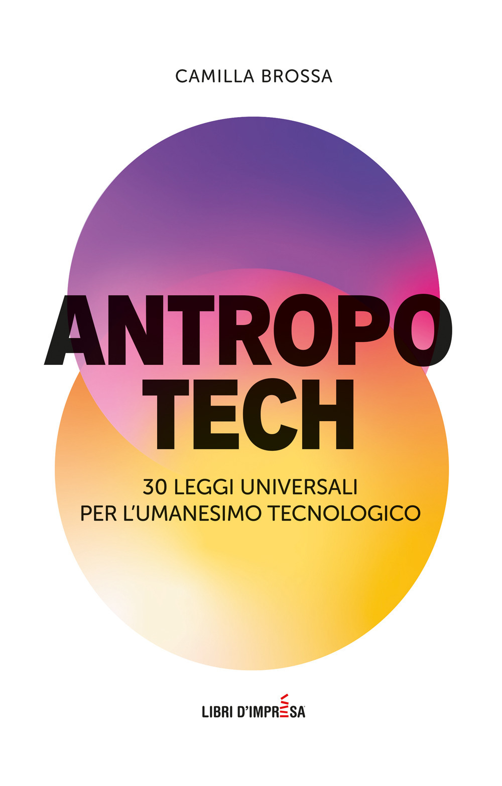
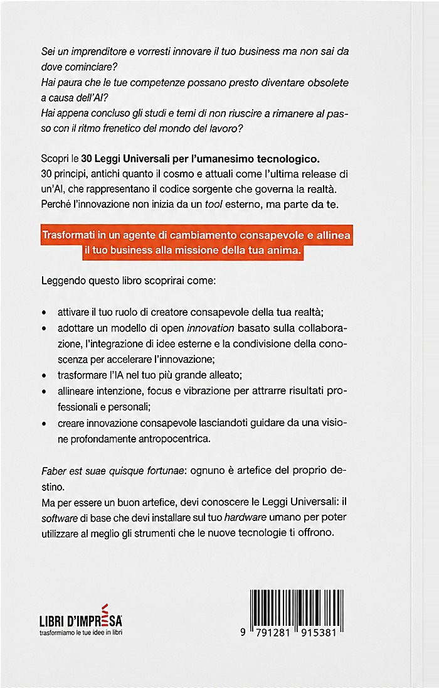

30 leggi universali
Principi senza tempo tradotti in strumenti pratici per la vita e il lavoro. Ogni legge è una guida per affrontare le sfide del mondo moderno con lucidità e controllo.
3030 Leggi Universali per l'Umanesimo Tecnologico
Un libro che unisce saggezza antica e tecnologia per creare un futuro consapevole.
In un mondo che cambia, resta umano.


Viviamo nell'era dell'intelligenza artificiale, della velocità e dell'automazione. Ma mentre la tecnologia evolve, una domanda resta aperta:
Antropotech nasce per rispondere a questa domanda. Unisce tecnologia, crescita personale e leggi universali per aiutarti a non subire il cambiamento, ma guidarlo.
Ho vissuto in prima persona cosa significa inseguire il successo, perdere tutto e ricominciare da zero. Ho lavorato nel cuore dell'innovazione tecnologica, tra intelligenza artificiale, startup e mercati globali. E proprio lì ho capito una cosa fondamentale: la tecnologia amplifica ciò che siamo. Se non evolviamo come esseri umani, rischiamo di costruire un futuro avanzato ma vuoto. Antropotech nasce per colmare questo gap: integrare mente e materia, visione e sistema, coscienza e codice.
Principi senza tempo tradotti in strumenti pratici per la vita e il lavoro. Ogni legge è una guida per affrontare le sfide del mondo moderno con lucidità e controllo.
30Dalla fisica alla spiritualità, per comprendere come funziona davvero il «gioco» — e smettere di guardare solo metà del quadro.
◉Per usare l'AI e le innovazioni senza perdere direzione, identità e senso. La tecnologia come alleato, non come minaccia.
∆Le Leggi Universali indicano la direzione.
Non è un elenco di consigli slegati tra loro. Ogni legge si aggancia alla successiva, come i capitoli di una mappa che puoi percorrere in ordine oppure aprire al bisogno, nel momento in cui la vita pone la domanda giusta.
Ogni legge nasce da un'osservazione concreta e si chiude con un esercizio pratico. Non serve impararle a memoria: bastano pochi minuti prima di una decisione importante per cambiare il modo in cui la affronti.
Come smettere di subire il cambiamento e iniziare a crearlo.
Come usare le leggi universali per prendere decisioni concrete.
Come allineare lavoro, identità e visione sviluppando un mindset adatto a un mondo in evoluzione.
Come integrare tecnologia e consapevolezza trasformandole in un vantaggio competitivo autentico.
Come trasformare crisi e fallimenti in leve di crescita.
Pronto a guidare il cambiamento, qualunque cosa venga dopo.

Professore di imprenditoria alla Harvard University, Stanford University e alla Hult International Business School. Ha ricoperto ruoli accademici di rilievo, tra cui Dean del campus della Hult di San Francisco e Dean of Global Research. È imprenditore, investitore e advisor internazionale, con una lunga esperienza nello sviluppo di startup e modelli di business.
Camilla Brossa è intelligente, ambiziosa e straordinariamente chiara nel condividere le sue idee. Ho avuto il privilegio di vederla insegnare Web3 ai miei studenti ad Harvard e di osservare il suo talento nel creare comunità solide e collaborative.
Per troppo tempo Camilla ha sottovalutato il proprio potenziale. Oggi ha iniziato a riconoscere la portata del suo impatto. Questo libro è il risultato di quella consapevolezza.
— Ted Ladd, dalla prefazione
Ma se ti riconosci anche solo in una di queste situazioni, probabilmente è per te.
E senti che devi innovare il tuo business, ma non sai da dove partire o temi di fare le mosse sbagliate in un mondo che cambia troppo velocemente.
Una crisi, una perdita, un reset — e stai cercando un modo per ricostruire. Non da zero, ma meglio.
E ti senti schiacciato dalla velocità del mondo del lavoro e dalla paura di non essere abbastanza preparato.
Ma senti che manca qualcosa: che il successo esterno non è allineato con chi sei davvero.
E hai la sensazione che le tue competenze possano diventare obsolete — ma allo stesso tempo intuisci che l'AI può essere un alleato.
Ma non hai ancora trovato un linguaggio per integrarlo — tra tecnologia, razionalità e dimensione interiore.
Se senti che il mondo sta cambiando troppo velocemente, questo libro è per te. Trenta leggi per smettere di subire il cambiamento e iniziare a guidarlo.
Il rumore è tanto. Il segnale, poco.
Aggiornamenti e contenuti per non subire il cambiamento, ma guidarlo. Direttamente nella tua inbox.
«Bello, bello, bello. Mi è piaciuto moltissimo leggere questo libro, unico nel suo genere. Camilla raccoglie in un unico volume le 30 leggi universali, le descrive e le commenta con uno stile molto piacevole e scorrevole. Più che un volume da mettere nella libreria, è un manuale da tenere a portata di mano e da consultare in caso di bisogno.»
Barbara B.Insegnante«Davvero illuminante. Ho letto Antropotech in un periodo particolare della mia vita e, in quelle pagine, ho trovato strumenti concreti per affrontare le mie giornate. Camilla, con un linguaggio semplice e chiaro, riesce davvero a darti gli strumenti per affrontare la quotidianità in modo diverso. Davvero super consigliato!»
Elisa B.Esperta di marketing«Antropotech è uno di quei libri che ti fanno fermare e riflettere. Permette di osservare le nostre scelte e modi di pensare partendo da angolazioni nuove e non usuali. L'autrice riesce a smontare l'idea che la tecnologia sia qualcosa di inumano: anche in un mondo sempre più tecnologico, al centro rimaniamo noi. È una lettura che non dà risposte definitive, ma lascia con domande interessanti e la voglia di trovare le nostre di risposte.»
Giulia GhiglioneFinancial Advisor«Ho conosciuto Camilla sui social e poi di persona ormai un anno fa. Il caso — o molto più probabilmente un fortunato intreccio di Leggi Universali che descrive nel libro — ci ha portate a iniziare una di quelle conversazioni che non finiscono alla fine di un incontro. Leggere AntropoTech è stato esattamente questo: un incontro che non finisce quando sfogli l'ultima pagina, ma ti spinge a ricercare, a farti domande, a cambiare lo sguardo che hai su di te e sugli altri.»
Claudia CastellucciExecutive Coach«Antropotech rappresenta per me il manuale di tutte quelle sensazioni provate ma mai distintamente riconosciute, ora finalmente impresse nero su bianco. È la traduzione di quel "qualcosa mi dice che" che portiamo dentro tutti, ma che spesso non riusciamo a esprimere a parole, sommersi da un mondo rumoroso e saturo di distrazioni. Questo testo è un piccolo angolo di casa dove, ad accoglierci, non c'è uno sconosciuto, ma la versione più autentica di noi stessi.»
Violetta ZironiArtista e attrice